This Issue
August 2026 edition
1,173 sqft vs 1,635
Median square footage of homes flippers resold this edition, against the same period a year ago
Flip resales this edition are smaller, older and closer in: median exit 1,173 sqft vs 1,635 a year ago
The 267 flips resold this edition had a median 1,173 sqft, down from 1,635 a year ago, and a median year built of 1960 versus 1984. Pre-1950 houses were 36% of flip exits versus 16% a year ago, and the median flip sat 17.3 km from the central business district versus 22.1 km. Ticket size fell with the product — $320,000 median resale versus $405,204 — while price per foot rose to $266.57 from $254.72. Hennepin and Ramsey took 46% and 21% of flip exits, up from 36% and 15%.
Investor Playbook
What this issue's numbers suggest checking, by investor type. Observations from recorded data — not investment, legal, or tax advice.
Rebuild the buy box around 1,173 sqft, pre-1950, inside Hennepin and Ramsey
Wholesalers
Only 4 assignments surfaced on recorded deeds this edition versus 17 a year ago, and that count is a floor. The demand that remains is for the product operators are actually reselling: median 1,173 sqft, built 1960, 36% pre-1950, 17.3 km from the CBD. The data suggests working 55412 Camden ($147,500 median investor buy, 11 flips), 55407 Powderhorn ($199,117, 5), 55406 Longfellow ($205,000, 7) and 55428 Crystal ($165,000, 8) rather than the $500,000-plus outer zips where flip share collapsed.
Smaller houses are clearing at a higher price per foot, not a higher ticket
Flippers
Median resale is $320,000 versus $405,204 a year ago, but $266.57/sqft versus $254.72. Sale-to-assessed sits at 1.10, down from 1.15, so the cushion above the county number is thinner. With 361 bought against 267 sold and 79 positions aging out in the latest month, underwriting to the 156-day median hold — and stress-testing to the 9.7-month upper quartile — is worth checking before adding another. Single family was 178 of the resales; the 2-4 unit and condo counts are too thin to plan around.
2-4 unit stock is the cheapest recorded basis per foot this edition
Landlords
Of 1,475 investor purchases, 46 were coded 2-4 units at a $368,500 median and $167/sqft, against $242/sqft for the 664 single family deals and $300/sqft for 245 condos. That gap is the clearest basis argument in the file. With flip buying at 361 against 267 exits, landlords are bidding against operators for the same 1,173-sqft pre-1950 houses in 55106, 55406, 55411 and 55117 — the zips where the mid-tier operator band concentrates.
Recorded private paper is thin; seller notes filled the gap
Private lenders
Recorded private loans fell to 10 from 32 a year ago, while seller-financed notes ran 70 this edition against 40 in the prior period (82 a year ago) at a $266,288 median. Trailing-12-month lender ranks show Kiavi at 53 loans (60% with rehab dollars, $279,100 median) and RFLF 4 at 37 (89% rehab). The opening the data suggests is short-duration rehab paper near the $238,000 trailing median loan on inward, pre-1950 stock, sized to a 156-day median hold. Rates and terms are modelled, not recorded, and are not published here.
Small multi is a growing slice of flip exits while 5+ trades at a premium per foot
Multifamily investors
Small multi was 4.9% of flip resales this edition versus 1.9% a year ago — a small but doubling share worth tracking as renovated 2-4 unit product comes to market. On the buy side, 74 Apartment 5+ deals cleared at a $1,271,000 median and $229/sqft against $167/sqft for 46 recorded 2-4 unit purchases. Where the smaller asset can be operated on the same management line, that spread is the number to test.
Factoids
Numbers from this period a practitioner would repeat to a colleague. Each computed directly from recorded instruments.
1,475 investor purchases at a $367,875 median — Recorded investor purchases and median price this edition
holding steady · vs 1,520 and $355,000 a year ago
Acquisition volume is roughly flat year over year while the median paid is higher. Buy-side competition has not eased even as resale volume fell.
143 flip operators — Distinct operators recording a flip resale this edition
trending down · vs 258 a year ago
The seller field has thinned by nearly half. The top ten operators took 32.2% of flip revenue, down from 37.8% a year ago, so the shrinkage is broad rather than concentrated at the top.
Flippers bought 361 and sold 267, a net +94 to inventory — Flip purchases less flip resales this edition
trending up · vs a net −13 a year ago
Operators added more houses than they cleared this edition, reversing last year's drawdown. Held pipeline stood at 5,044 in the latest month, with 79 positions aging out.
55412 Camden holds 4.1% of flip exits — Zip share of flip resales this edition versus a year ago
trending up · was 1.0% a year ago
55106 Payne-Phalen moved to 3.7% from 1.4% and 55102 West Seventh to 2.6% from 0.3%, while 55340 fell to 0.4% from 3.6% and 55369 Maple Grove to 0.7% from 3.8%. Camden also logged 16 investor buys at a $147,500 median.
10 private loans recorded, median $244,000 — Recorded private loan instruments this edition
trending down · vs 32 at a $332,552 median a year ago
Recorded private lending is scarce, but the trailing-12-month file shows 855 of 1,566 observed purchases financed, a 54.6% share, at a 0.95 median loan-to-price. Rehab dollars were identified in 38.7% of those loans.
156-day median hold — Median days from prior purchase to flip resale this edition
trending down · vs 177 days a year ago
Faster turns paired with a 47.7% median gross margin, up from 44.5% a year ago, on a $100,000 median gross margin. Rehab and carry are not public record, so margins are gross.
Market Activity — Investor Purchases
Monthly count of investor purchases of MSA properties (left axis) and the median purchase price (right axis), trailing 13 months. The most recent month can grow up to ~15% as late recordings arrive.
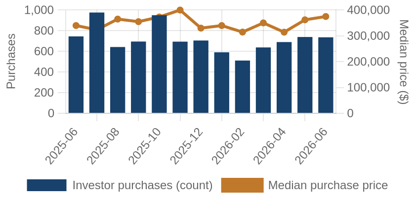
Investor purchases per month (bars) and median purchase price (line), trailing 13 months.
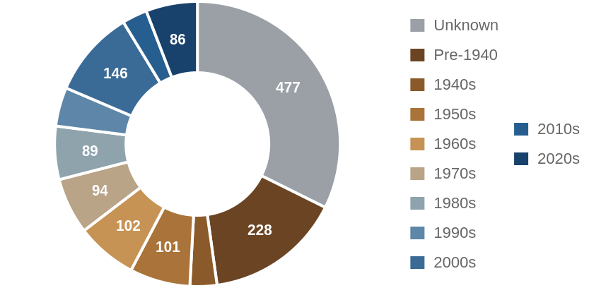
Which vintage of housing investors bought this edition, by decade built.
Where the Money Went
The geography of the period's investor activity: which zip codes saw the most recorded deals, and the largest individual transactions at street level.
The 8 busiest zip codes for investor deals
Pins rank the busiest zips by recorded investor deals (purchases + flips of existing homes) this period — #1 busiest; orange = top 3; pin size scales with deal volume. Median buy is the typical investor purchase; median sale the typical flip resale. Click a pin for details; full table below.
| # | Zip | Area | Purchases | Flips | Median buy | Median sale |
|---|
| #1 | 55044 | Lakeville | 25 | 2 | $506,093 | n/a |
| #2 | 55412 | Camden | 16 | 11 | $147,500 | $246,600 |
| #3 | 55407 | Powderhorn | 21 | 5 | $199,117 | $268,000 |
| #4 | 55340 | HAMEL | 24 | 1 | $562,500 | n/a |
| #5 | 55406 | Longfellow | 17 | 7 | $205,000 | $260,000 |
| #6 | 55423 | Richfield | 19 | 5 | $280,000 | $330,900 |
| #7 | 55104 | Union Park | 15 | 8 | $547,000 | $248,750 |
| #8 | 55369 | Maple Grove | 20 | 2 | $309,000 | n/a |
A representative deal in each of the busiest zips
One deal per zip: the largest matching this market's typical house (typical for this market: 1322 sqft, 3 bed, built around 1964; priced within 4x the county assessment and under 5x its own zip's median).
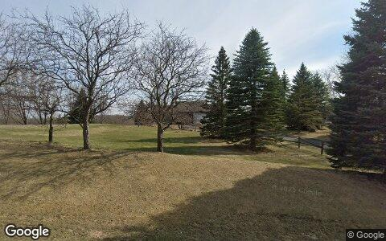
$700,000 · Purchase
2085 HAMEL RD, Hamel 55340
Single family · 1,770 sqft · May 4
Street View Apr 2025 — before the purchase
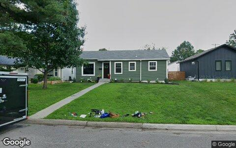
$450,000 · Purchase
7241 HARRIET AVE, Minneapolis 55423
Single family · 1,663 sqft · May 1
Street View Jul 2026 — after the purchase
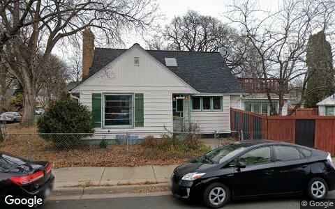
$425,000 · Purchase
4300 E 41ST ST, Minneapolis 55406
Single family · 1,562 sqft · Jun 2
Street View Nov 2022 — before the purchase
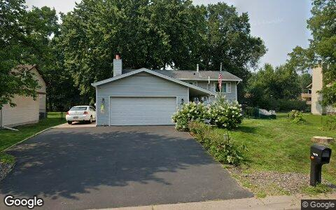
$377,700 · Purchase
11878 100TH PL N, Maple Grove 55369
Single family · 976 sqft · May 8
Street View Aug 2025 — before the purchase
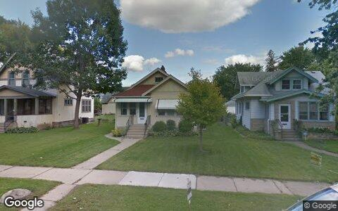
$340,000 · Purchase
3317 21ST AVE S, Minneapolis 55407
Single family · 934 sqft · May 26
Street View Sep 2014 — before the purchase
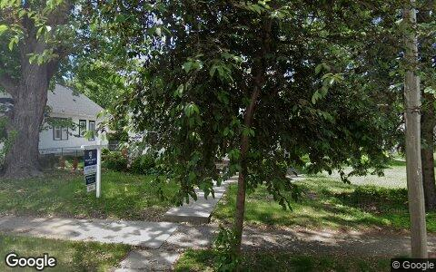
$337,000 · Purchase
4211 UPTON AVE N, Minneapolis 55412
Single family · 1,341 sqft · Jun 22
Street View May 2026 — before the purchase
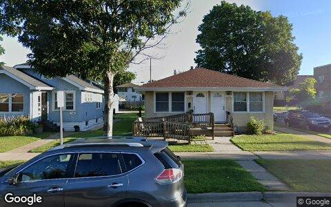
$300,000 · Purchase
1343 SHERBURNE AVE, Saint Paul 55104
2-4 units · 1,176 sqft · May 11
Street View Aug 2024 — before the purchase
Deal sheet — private lending, in date order
Private loans recorded against residential property this period, oldest first.
| Date | Lender | Amount | Property | Use |
|---|
| Jun 29 | Shirmer Mandi | $238,000 | 14183 Finale Ave N, Hugo 55038 | Single family |
| Jun 30 | Wellstone Paul | $100,000 | 2195 Howard CT, Saint Paul 55119 | Single family |
| Jun 30 | Roseville Economic Dev Authori | $27,500 | 157 Grandview Ave W, Saint Paul 55113 | Single family |
Largest flip margin deals of the period, at street level
Gross margin = recorded sale price minus the flipper's recorded purchase price. Purchase deeds are recoverable for roughly 4 in 10 flips; rehab and carry costs are not public record.
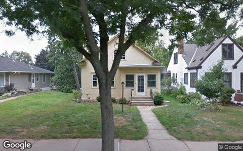
$1.2M gross · bought $435,000 (Aug 2025) → sold $1.7M
5228 ABBOTT AVE S, Minneapolis 55410
Single family · 1,000 sqft · Jun 1
Street View Aug 2011 — before the flip (pre-renovation)
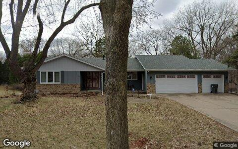
$715,000 gross · bought $560,000 (Sep 2025) → sold $1.3M
5400 MALIBU DR, Minneapolis 55436
Single family · 2,789 sqft · May 28
Street View Apr 2025 — before the flip (pre-renovation)
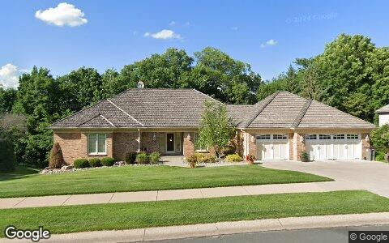
$662,000 gross · bought $680,000 (Jan 2026) → sold $1.3M
10752 MOUNT CURVE RD, Eden Prairie 55347
Single family · 4,221 sqft · Jun 5
Street View Jun 2019 — before the flip (pre-renovation)
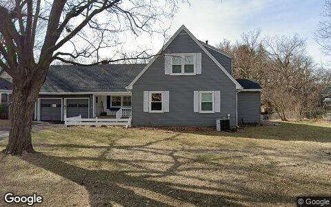
$532,000 gross · bought $800,000 (Sep 2025) → sold $1.3M
4205 W 42ND ST, Minneapolis 55416
Single family · 1,874 sqft · Jun 9
Street View Apr 2025 — before the flip (pre-renovation)
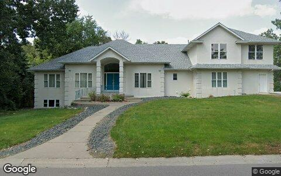
$327,500 gross · bought $672,500 (May 2025) → sold $1.0M
694 MEADOW LN, Saint Paul 55125
Single family · 3,541 sqft · Jun 5
Street View Aug 2024 — before the flip (pre-renovation)
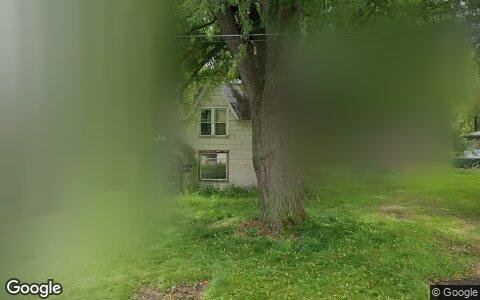
$279,222 gross · bought $120,678 (Oct 2025) → sold $399,900
15055 UPPER 63RD ST N, Stillwater 55082
Single family · 1,340 sqft · Jun 11
Street View Aug 2024 — before the flip (pre-renovation)
Flip Structure — Year over Year
How the flip market itself is changing: margins, who is doing the flipping, what they flip, and where. Same two calendar months, this year vs last, from the current data extract.
| Flip market structure | Same months last year | This edition |
|---|
| Flips sold | 580 | 267 |
| Median sale | $405,204 | $320,000 |
| Median $/sqft | $255 | $267 |
| Sale vs county-assessed | 1.15× | 1.10× |
| Median gross margin (matched buys) | $103,250 | $100,000 |
| Median margin % | 44% | 48% |
| Median hold | 5.8 mo | 5.1 mo |
| Homes bought by flippers | 567 | 361 |
| Net to inventory (bought − sold) | −13 | +94 |
| Active flippers | 258 | 143 |
| Top-10 flippers' revenue share | 38% | 32% |
| Median house: sqft / beds / built | 1635 / 3 / 1984 | 1173 / 3 / 1960 |
| Pre-1950 stock share | 16% | 36% |
| 2–4 unit share | 2% | 5% |
| Median distance from downtown | 22.1 km | 17.3 km |
Homes bought counts every deed recorded to a known flipper in the window, resold or not. Net to inventory is that minus flips sold. The standing stock is in the Flip Pipeline section.
Attributed profit per flip (per-investor aggregates, by drop period): Feb 26→Jun 26: 873 flips, n/a (revisions) · Jun 26→Aug 26: 298 flips, n/a (revisions).
County mix (share of flips, last year → this edition): Hennepin 36%→46% · Ramsey 15%→21% · Washington 10%→8% · Anoka 12%→7% · Dakota 11%→6% · Wright 5%→3% · Scott 4%→2% · Isanti 0%→1% · Chisago 0%→1% · Sherburne 2%→1% · Carver 1%→1% · Le Sueur 0%→0% · Mille Lacs 1%→0%.
Biggest zip share moves: 55340 3.6%→0.4% · Camden 1.0%→4.1% · Maple Grove 3.8%→0.7% · Payne-Phalen 1.4%→3.7% · Union Park 0.7%→3.0% · West Seventh 0.3%→2.6%.
Flip Pipeline — Buying, Selling and Inventory
Homes bought by known flippers and homes they resold, per month, alongside the stock sitting in flipper hands. A house enters inventory when a flipper buys it and leaves on the next recorded sale, at any price. Purchases still unsold after five years are treated as holds and drop out.
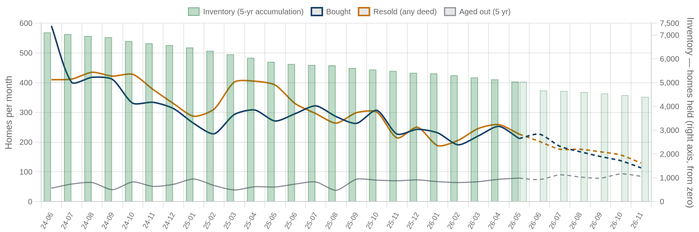
Solid = recorded, dashed = projected. Green bars are inventory on the right axis: homes bought and not yet resold. Aged out is purchases passing five years unsold. Inventory moves by bought minus resold minus aged out.
| Flip pipeline | Bought / mo | Resold / mo | Aged out / mo | Inventory |
|---|
| Latest recorded month (2026-05) | 212 | 227 | 79 | 5,044 |
| Projected (2026-11) | 113 | 129 | 85 | 4,405 |
Method: a straight-line trend through the last 24 months, adjusted for the month of the year, shown dashed as a projection. The series stops before the newest month or two, where deeds are still recording.
Who's Funding the Deals
First mortgages open on flipper purchases from Jul 2025 – Jun 2026 that have not yet resold. 55% carried recorded debt; the rest closed cash or off-record. Ranked by deal count.
55%
Purchases financed
855 of 1,566 flipper purchases carried a recorded first mortgage
$238,000
Typical loan
median 0.95× the purchase price
39%
Funding the rehab too
331 of 855 loans exceed the purchase price, so the lender is covering work as well as the buy
| Lender | Loans | Borrowers | Median loan | Loan vs price | Funds rehab | Median purchase |
|---|
| Kiavi Funding INC | 53 | 33 | $279,100 | 1.16× | 60% | $238,000 |
| RFLF 4 LLC | 37 | 11 | $254,500 | 1.23× | 89% | $211,000 |
| Wells Fargo Bank NA | 32 | 24 | $166,819 | 0.69× | 16% | $269,950 |
| Bell Bank | 22 | 21 | $336,850 | 0.87× | 18% | $410,950 |
| Bridgewater Bank | 20 | 9 | $228,500 | 0.87× | 45% | $208,500 |
| Coulee Bank | 20 | 5 | $198,992 | 0.96× | 30% | $208,500 |
| Us Bank NA | 14 | 13 | $239,781 | 0.70× | 7% | $318,450 |
| Cove Lending LLC | 13 | 7 | $280,750 | 1.24× | 92% | $220,000 |
| Lakeview Bank | 13 | 7 | $216,976 | 0.80× | 15% | $271,220 |
| Granite Bank | 12 | 10 | $322,300 | 0.98× | 42% | $346,000 |
Rates and terms are not published: the county feed models both. Borrowers counts the distinct flippers on each lender's book. Loan vs price is the recorded first mortgage divided by what the buyer paid. Above 1.00x the lender is funding purchase plus rehab; below it the buyer brought cash to the table. Blanket mortgages covering several parcels are excluded, as are loans outside 0.1x-3x the price. Rates and points are not public record.
Flipper Profile — The Working Flipper
The 70th–90th percentile of local flippers by lifetime flip count — the established operators below the whales: 3–8 lifetime flips each. Bath counts are not in the assessor extract.
862
Flippers in the band
each with 3–8 lifetime flips (avg 4.1)
$76,500
Median gross margin
11,892 flips matched to their purchase price
6.2 mo
Typical hold
purchase to resale, matched deals
1322 sqft · 3 bd
Typical house
median year built 1964
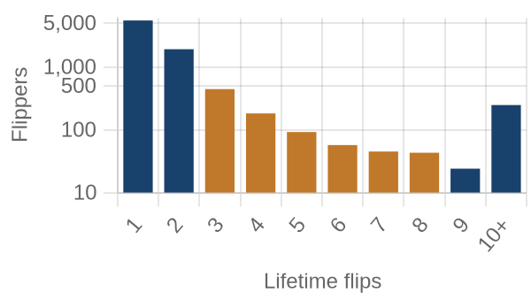
flippers by lifetime flips · orange = this band
Where they work: Payne-Phalen (55106) 3% · Longfellow (55406) 2% · Near North (55411) 2% · Audubon Park (55418) 2% · North End (55117) 2%.
Market Pulse
| per month, 2025 | per month, 2026 | change | avg/mo 2yr | avg/mo 4yr |
|---|
| ▼ Homes bought by flippers | 284 | 181 | -36% | 301 | 356 |
| ▼ Flips sold (deeds) | 290 | 134 | -54% | 320 | 341 |
| ▲ Lending deals funded | 29 | 86 | +197% | — | — |
| ▲ Seller/notes held (net) | -25 | 121 | +594% | — | — |
| ▼ Investors (net) | 89 | -2,425 | -2817% | — | — |
Flips and flipper purchases = recorded deeds, same two months each year; their 2- and 4-year columns are per-month averages of the deed series. The remaining rows come from the investor file, which spans 13 months, so they have no multi-year average (2026: Jun 2026 → Aug 2026; 2025: Feb 2026 → Jun 2026).
Past Issues
Methodology
Source Data
County recorder & assessor via FARES
Every figure is computed from recorded instruments (deeds, mortgages, assignments) and assessor property records for the five counties of the Minneapolis-St. Paul-Elyria MSA. No surveys, no estimates, no listings data.
This edition analyzes transactions dated May 1 – June 30, 2026, as recorded through the 2026-08 data extract.
Who Counts as an Investor
Transaction-pattern identification
Investors are entities whose recorded transaction history looks like investing: rental holding (landlords), short-hold resales (flippers), private mortgage lending, note holding, or contract assignment (wholesalers). Banks, homebuilders, iBuyers, SFR funds, and government entities are identified by name and reported separately from small investors.
How Comparisons Work
Attribution deltas + same-window comparisons
The Market Pulse reports activity attributed between successive data drops, from the per-investor lifetime totals maintained upstream — periods differ in length, so per-month rates are shown. Elsewhere, "vs. year ago" compares the same calendar months one year earlier, counted from the same data extract. Transfers under $5,000 (quitclaims, partial interests) are excluded everywhere. Counts lag recording by 4–8 weeks, and the newest month can grow up to ~15% as late records arrive — direction is reliable before magnitude.
Known Limits
Floors, not ceilings
Wholesale assignments only appear when they touch a recorded deed, so those counts are a floor. Flip hold times are measured from the prior recorded sale. Names are the owner of record, which may be an LLC or trust.
About
Purpose
A working tool for small real estate investors in Greater Minneapolis-St. Paul: what actually closed, where, at what prices, and what it suggests checking next — one theme per issue.
Cadence
Published with each bi-monthly data drop, covering the two most recent complete months of recorded activity.
Disclaimer
Observations from public records, not investment, legal, or tax advice. Past activity does not guarantee future results. Verify any property or counterparty independently before transacting.